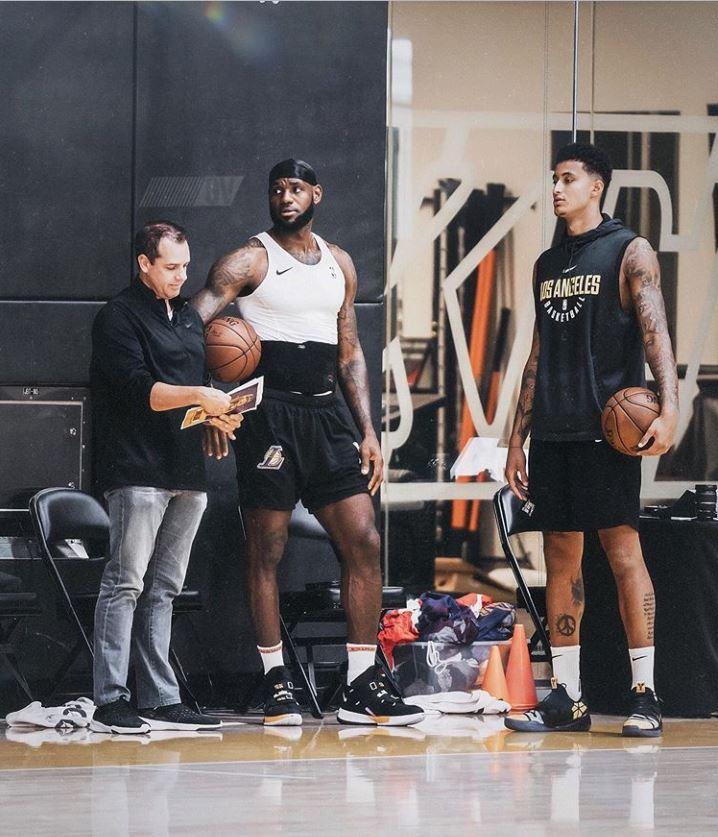
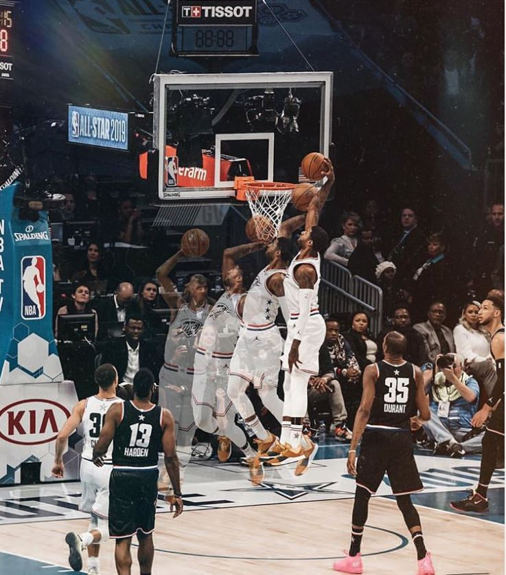
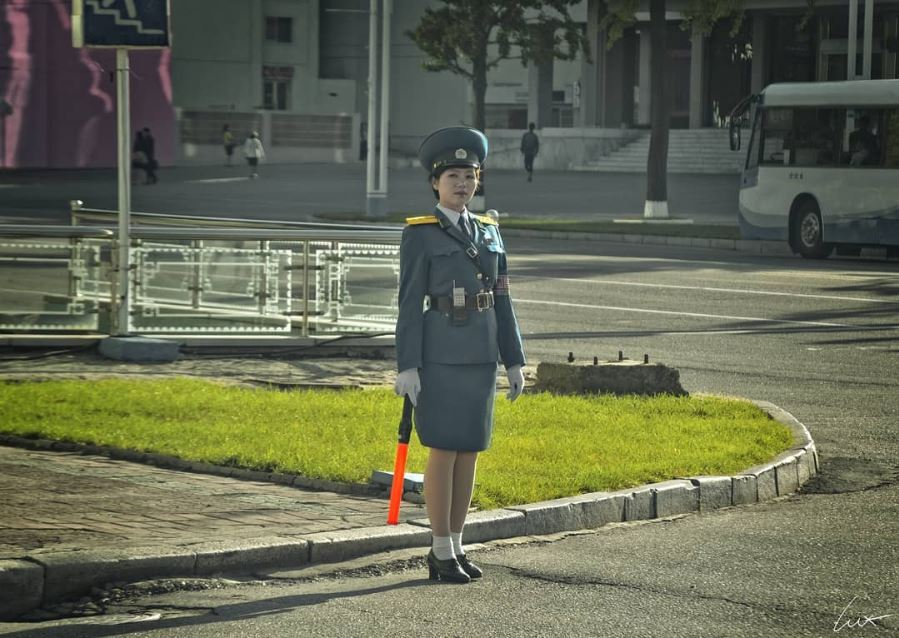
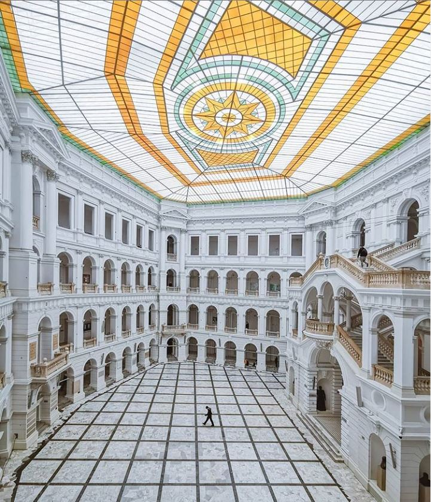
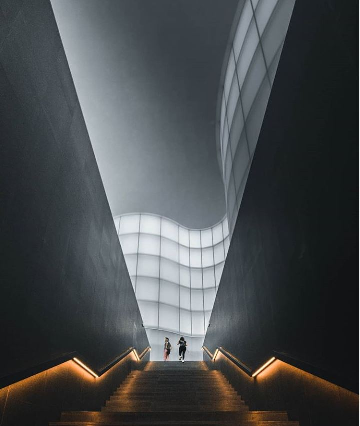
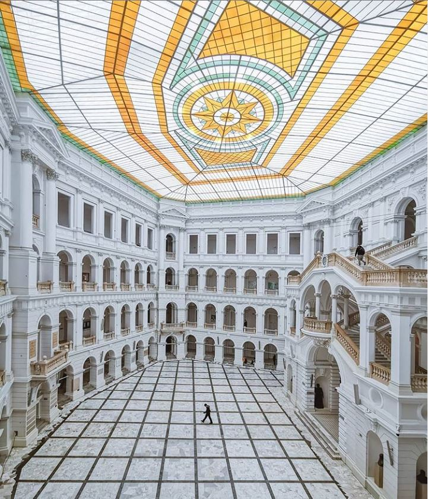
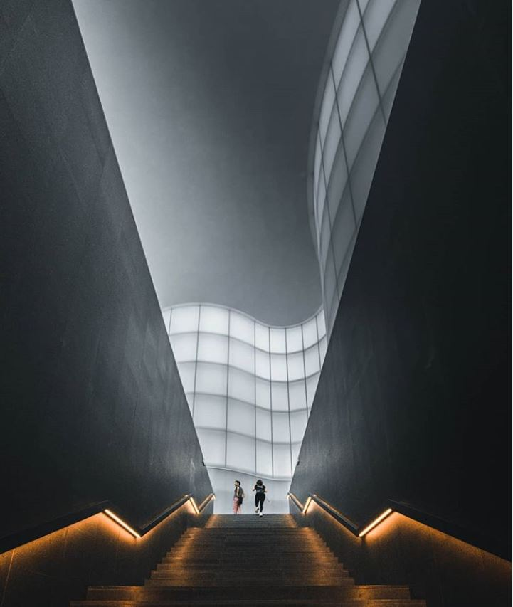
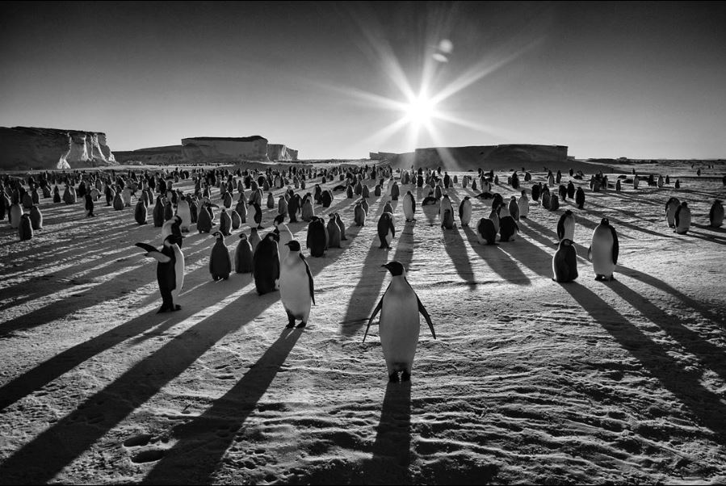
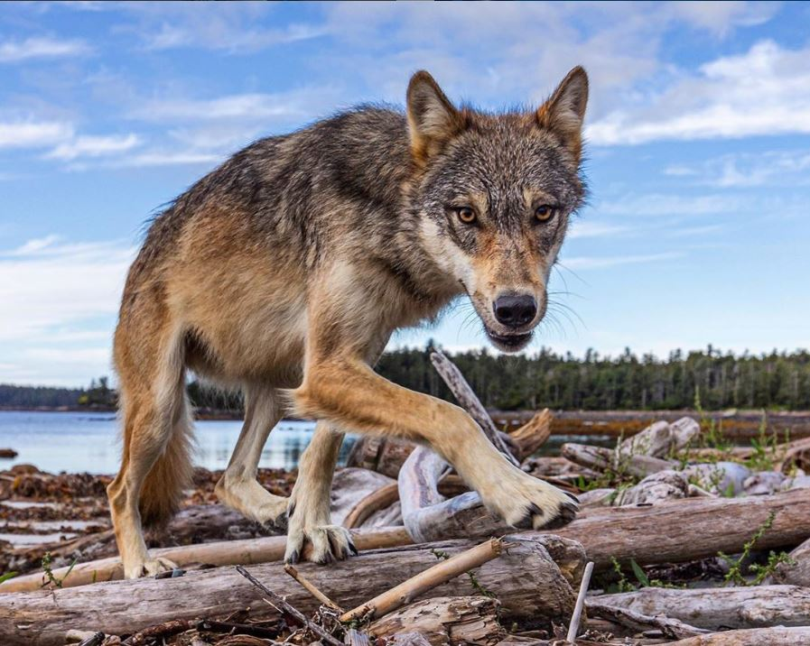

Les photographes
Darrell Ann Darrell Ann est un photographe américain. Il est photographe sportif, sur son compte se retrouvent ainsi les plus grandes stars de la NBA que ce soit sur le court ou dans leur vie de tous les jours.



Darrell Ann Darrell Ann est un photographe américain. Il est photographe sportif, sur son compte se retrouvent ainsi les plus grandes stars de la NBA que ce soit sur le court ou dans leur vie de tous les jours.
Gabriel D.Lux J'ai découvert ce compte car c'était le professeur d'un ami. A travers ses photographies de Corée du Nord, Gabriel D.Lux expose l'atmosphère particulière de ce pays par des photos d'urbanisme ou de scène sociale. 
Anh Nguyen Cette photographe originaire de Berlin se définit par un style urbain. Beaucoup de photos d'architectures et de batiments. On voit rarement plus d'une personne sur ses photos.
 



Paul Nicklen Paul Nicklen est un photographe Canadien. D'abord orienté vers la biologie, il est aujourd'hui une référence dans la photographie animalière, il est l'un des photographes de National Geographic. Ses photos nous montrent la nature sauvage et glaciale souvent de pays froids. .  